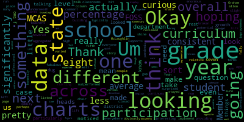

AI-generated transcript of COW Meeting: MCAS Results
English | español | português | 中国人 | kreyol ayisyen | tiếng việt | ខ្មែរ | русский | عربي | 한국인
Back to all transcripts
[Van der Kloot]: stands one nation, under God, indivisible, with liberty and justice for all. Member McLaughlin, would you please call the roll?
[Unidentified]: Yes. Here. Here.
[McLaughlin]: Member McLaughlin, here. Member Mustone, not here. Member Ruseau?
[Van der Kloot]: Here.
[McLaughlin]: Member Van der Kloot? Present. Mayor Lungo-Koehn, not here.
[Van der Kloot]: So with five present and two absent, we have a quorum and the meeting can proceed. Madam Superintendent, if I could ask you now to take over.
[Edouard-Vincent]: Thank you. Good evening. This evening we're going to have an opportunity to look at our MCAS results. We will have a slide presentation, and that presentation will begin with science. Mr. Rocco Cieri our director of science will present the science information, followed by Miss Pfizer current who will present mathematics, and Dr Nicole keys who will be presenting for us. So without much further ado, Dr cushion.
[Peter Cushing]: Good evening, thank you members of the committee and Dr. Edouard-Vincent. Prior to beginning, wanted to just give you a little bit of the pandemic induced shifts that occurred as a result. Jesse made significant shifts regarding MCAS. So Jesse allowed some assessments to be taken from home ELA and math grades three through eight and the science technology engineering exam grade five. STE grade nine was only available as a paper based assessment, there was no computer based option. Remote only high school students could opt out of the STE MCAS. However you look at that, the students now will be required to take the chemistry STE exam. So students in the freshman class take biology. These students in the sophomore class will take STE. And there are modified competency determinations for classes 21, which graduated 22 and 23. One more quick slide. This year, there were no accountability ratings for elementary and secondary education. There were none at the school district or state level for accountability. And now actually Pfizer is going to go first.
[Khan]: Thank you, Dr. Cushing. Thank you, members of the school committee. I would like to start off by looking at slide four. Dr. Cushing, we have it up. The mean SGPs for the grade levels are here for grade five. It was 28.53 for grade six. It was 23.85 for grade seven, 41.6. For grade eight, 35.8, and for grade 10, it was 35.4. In the report on page, and I can pull it up, there is a comparison between the state and the district. It is on page 14.
[Van der Kloot]: On page what, Plaza?
[Khan]: On page 14. Thank you. If you would like to take a look.
[Unidentified]: on page 14 of the report.
[Khan]: never end. Page 14 of the MCAS mathematics report. I would like to move on to the next slide, please, for the Mathematics 2021 MCAS action items. Thank you. The mathematics department is working on the following initiatives to bring greater coherence to mathematics instruction K through 12. In addition, the eventual adoption of a new elementary mathematics program promises to further prepare our students to engage in inquiry-based learning. These actions will further ensure that our youngest learners will have greater access to advanced mathematics learning opportunities in high school and beyond. The mathematics action items include using Envision's mathematics program in elementary K through five classrooms, with the exception of 22 classrooms using Bridges and Investigations III. Bridges and investigations three are basically problem based inquiry based programs. They are in line with the new pedagogy and they rank very high on ed reports and their experience in the surrounding districts has been excellent. Number two, selecting a new elementary math program with the elementary math program review committee We are anticipating that it'll be completed by March, April of 2022. We'll make a decision and we will come to you with the findings. Bullet three is using illustrative mathematics standard classes and big ideas and accelerated classes at the middle schools. This has been ongoing. We are reorganizing middle school acceleration by teaching half of eighth grade standards in seventh grade and the other half in eighth grade, along with algebra one standards. Whereas up until last year we were teaching seventh and eighth grade standards in seventh grade and teaching algebra one standards in eighth grade to the accelerated students, so that was two years worth of mathematics for the accelerated seventh grade students. And we felt that we are in line with Desi's recommendation by splitting the standards half and half into two years rather than finishing up two years worth of standards in one. Moving on, on the next page, on the next slide. are reviewing grade six through 12 pacing guides and modifying sequence if needed to keep a balance between spiral learning and improving student performance on MCAS. Grades K through five will use program specific pacing guides for program assessment purposes. The reason is that we have 22 classrooms that are not using envisions 2020. So we need to be allowing the teachers to use it with full fidelity. So we cannot use a district-wide pacing guide for our elementary math program right now. Developing and updating the core syllabi for new and existing courses. Extending the education opportunities for our 6th through 12th students in order to help them achieve their full potential through MPS 6th through 12th Equitable Math Pathways and Program Review Committee. Just like our elementary program review committee, we have been reviewing the secondary programs. We have been contemplating many different pathways for our students. We want to make sure it's equitable to them because not all students can learn through algebra, geometry, algebra pathway. There is, for example, an integrated pathway that combines algebra and geometry for three years, subsequently leading to the calculus path. We will be looking at that. In fact, we already are. For the high school, for the middle school, we are looking at all our practices, for example, classroom participation rubric. We are looking at student self-assessment of group work rubric, just to be sure that we are equitable when we are when we are teaching and learning our Medford community students. Providing additional resources to teachers to increase ability to teach more diverse elective courses at the MHS, MBTHS, and Curtis Tufts. We are also looking at what other courses we can offer our students. Exploring options for the electives category that will combine with having additional resources because most of the additional resources will be needed for these electives if chosen. Shifting the focus of teaching and learning from procedural memorization to creative thinking. This has been the focus for last Two years pandemic had put a barrier to it, but this is really the gist of it that we want to shift from procedural memorization to creative thinking. We are developing a departmental vision and a mission statement with an emphasis on 21st century problem solving skills. We are researching nationwide best mathematical practices and trends to incorporate in our classrooms. We have been promoting and will continue to promote inquiry based teaching and learning through professional development of our teachers. and incorporating data-driven strategies using the data from our newly acquired NWEA Map Growth so that we can minimize learning loss due to COVID-19 and that we can also learn from this adaptive assessment. Those were the action items for mathematics for this year. And then now I'll move on to the highlights of the MCAS. So the high school grade 10 data slightly lagged behind the state in standards and domains by a two to 10 point differential in all categories. In the student growth percentile category, the high school was behind the state by 1.1 percentile. Given the extreme unusual conditions of the pandemic, we realized that we will continue to make consistent progress towards our goal of increased outcomes for all learners. The following data points are highlights from grades three through eight. Grade 8 at Andrews Middle School data closely matched with the state's grade level data at 39% versus state's 41%. Given the lower participation rate of 83% versus state's 93%, grade 8 at Andrews Middle School and McGlynn Middle School student growth percentile exceeded the state by 5.8%. Percentile points versus the state. Grade seven at McGlynn Middle School exceeding expectations close closely matched with the state's grade level data at 5% versus state 6% and they had similar participation rates. Grade seven at Andrews Middle School and McGlynn Middle School student growth percentile exceeded the state by 8.4 percentile points versus the state Grade six at Andrews Middle School, exceeding expectations and meeting expectations categories total 39% versus states 34%, which is notably higher than the states exceeding and meeting expectations categories put together, given the lower participation rate at Andrews of 66% versus states 95%. On slide eight, we continue on. Grade three at Mississippi Elementary School exceeding expectations is on par with the state at 5% despite a lower percentage rate than the state. Grade three at Roberts Elementary meeting expectations is on par with the state at 28% despite a lower participation rate than the state. Grade three at McGlynn Elementary School exceeding and meeting expectations categories total 39% versus state's 33%. you Grade five at Brooks Elementary School, exceeding expectations and meeting expectations categories total 42% versus states 33%, which is significantly higher than the state's exceeding and meeting expectations categories put together. Grade five at Brooks Elementary School, SGP is on par with the state. Grade four at Brooks Elementary School, exceeding expectations and meeting expectations categories total 45% versus states 33%. and that is significantly higher than the state's two categories put together. I have put the rest of the data in the tables in the report that was presented to you. I am not sure, would we like to take questions now or towards the end? Please advise.
[Van der Kloot]: question.
[Graham]: I actually do. So, you know, one of the things that I noticed particularly when you're talking about the student growth percentage. Yes. Is how significantly different grade seven and eight were than really what looked pretty consistent across the rest of the district. Um so, I was just curious if you had dug into like why those two grades so significantly outperformed the state average versus like everyone else who didn't, but just sort of hovered underneath. So I was just curious if there's something interesting going on there that you can share.
[Khan]: So grade eight, the students who took grade eight were the first students who were exposed to the new math curriculum, illustrative mathematics. And grade seven is the one where we did not have accelerated path last year. And the teachers were able to just hone in on grade seven standards to give them a stronger basis for grade eight. We did bring back the accelerated group this year, but last year it was very concentrated and focused effort only on grade seven standards. And I believe those two made a difference. Thank you.
[Edouard-Vincent]: I just wanted to piggyback and say that that was part of a conversation that Miss Khan and I had about the middle school scores actually being solid this year, the strongest in the district in terms of their SGPs and attributing it to the investment in illustrative math, which is more inquiry based and really forcing the students to be critical thinkers of mathematics. and hoping for similar increased outcomes at the elementary levels as we're piloting new programs that are more inquiry based and really pushing those higher order thinking skills.
[Van der Kloot]: Thank you.
[Ruseau]: Thank you. First, I have a process question. So I've had less than 48 hours with these documents since I was at the conference. And can you quickly give us an overview of the embargo date issue? Because I just feel like I would have liked to have had two or three weeks with this, not less than two days. And it's a lot of data. I think you all had more than 48 hours before you presented tonight. And I believe a lot of this has to do with the state's embargo rules, correct? Or have you had this and we could have had it weeks ago?
[Edouard-Vincent]: You're asking, can you just restate your question one more time?
[Ruseau]: Sure. So you all get this stuff in the, at the end of the summer, I understand, and it's embargoed. You can't tell anybody anything about it, right? The data you get.
[Edouard-Vincent]: When the data, yeah, I don't have the exact date right now when it was released, but we got the data and then we're disaggregating and analyzing the data.
[Ruseau]: Yes. And then there's an embargo date where you can tell us in this meeting, and that happens before the reports are sent to families.
[Edouard-Vincent]: Yes.
[Ruseau]: When is the report to families going?
[Edouard-Vincent]: We are shooting for this Friday. The hard copy reports have come in and we just distributed them to the schools. So they are in the process of making labels and getting them. So the deadline is for us to have the mailings back on Friday to get it out in the mailings. So parents will be able to get the results next week.
[Ruseau]: OK, so I guess I'm just trying to find out, is it possible in the future for us to have two weeks with this instead of 48 hours? Because this is a lot of data. I love data, but it's also an awful lot of information for me to have tried to get through in the amount of time we had. And I love that you all do the highlights. And not to sound negative, but I don't see a low lights option on the listing. You know, I mean, I'm happy to celebrate the positives, but there's surely plenty in this data that is not something we're gonna celebrate. And I mean, 48 hours after getting back from the conference is not enough time for me to do that. So is it possible in the future to get us this significantly? I mean, if it's not possible because of the embargo dates, that's what I'm wondering is like, is there a technical reason for which we can't get it earlier? And I don't know, if there is, then that's the way it is.
[Edouard-Vincent]: We can definitely, I'm gonna just take note to make sure that once we're able to release the data, to get the data to you so that you have two weeks with it prior to this meeting.
[Ruseau]: Thank you, that would be wonderful. I mean, this is how it's happened in the other three times I've received this. So it's not like new that this is happening, but I did have a question though, Ms. Khan on, There's with the exception of 22 classrooms in this envisions are those why are there classrooms not using envisions. I think you've told me, but I forgot.
[Khan]: So, and I just want to clarify that the 22 classrooms 12 with bridges and 10 with investigations are the piloting ones and and the other ones we move to envisions 2020 because envisions 2014 wasn't available.
[Ruseau]: Okay, great. Thank you. That was my question.
[Van der Kloot]: Are there any other questions from members?
[Kreatz]: Member Kreatz? Yes. So I just had one question. So at the beginning, it does say like grades three to six, no calculators are allowed for either session. And then grades seven to eight, no calculators are allowed. And I have a question. So my son, he used to have an accommodation to have a calculator present. Is, is that something that if a student has an accommodation, you know, for their IEP, can they have the calculator? Yes, yes.
[Khan]: If that allows it and it's written in their IEP or a 504, we do provide calculator.
[Kreatz]: And just one more, and I know that my son also got like extra time to take the test, because he just required extra time. So if that was part of an accommodation, would that be allowed also?
[Khan]: Yes, so MCAS is an untimed test. So it can go on until 220 or whenever the school day ends. So what is done at the high school level, and Mr. Deleva and the principals are in better position to speak about it, is that there is no pressure on students to finish early. They can take their time and finish up until 2.20, and sometimes I have even seen it go on further in rare cases. So absolutely, we keep our students at the center of it.
[Kreatz]: And just one final one. So I know Mr. Russo was mentioning like the low lights. So I just had a question in the past, there was, you know, something that was like an MCAS, like Academy or extra support for students, you know, even it was, it was actually like a program. It was a grant that was written and was received. And if the students, you know, needed support or assistance, They could sign up for the program, which was highly encouraged to take the program and they would go in for a Saturday course it was something like eight to like 11. And it was you know it really helped with the skill taking you know just they did a lot of quizzing and just how to go through the questions and you know don't you know forget to. you know, to answer a question. Is there anything yet, you know, in the works for something like that coming up in, you know, in the, you know, early winter, spring?
[Khan]: It's definitely something that we can work on. I do know that in summer, we offered Math Acceleration Academy. and I think that went quite well. I actually taught one of the sections and had a great time. So something like that and of that source, it's definitely food for thought. We are open to it. We are happy to look into the resources and then go from there. But yes, I do recall that it was there.
[McLaughlin]: Thank you. Thank you. Thank you. Member McLaughlin. Thank you. Thank you, Dr. Khan for the report. I'm wondering where does the MCAS alt data live and the MCAS opt out data live?
[Khan]: I do not have access to MCAS opt-out data. That will be the principles. And I believe Dr. Cushing and others have access to it. I don't have access to the opt-out data, but I'm happy to elaborate on the students who took the test. I can say more about it. And if you don't mind repeating your question, just so that I'm sure I'm answering it in its entirety. If you don't mind repeating your question.
[McLaughlin]: Oh, sure. I was just asking, I'm sorry, where does the MCAS-ALT data live? And where does, I think I heard you, I'm sorry, the mask is muffled and it's hard with the microphone, so I apologize. And my hearing is probably not getting any better either over time. But did you say the opt-out data, you would defer to Dr. Cushing?
[Khan]: I would definitely defer.
[McLaughlin]: And then the MCAS-ALT data, where does that live?
[Khan]: MCAS all data is also in the database by DESI. And I believe part of it will show up as the special. I believe the scale score comparisons, if you look at that, in my report, it's on page 16. So part of it will probably show up as part of that, but not sure if it's entirely there. Did you wanna? So under the subgroup data, it might come in and join.
[Joan Bowen]: So I think it's a separate report for the MCAS Alt data. We get the results at the same time as the MCAS, but it goes directly to the parents. We also get the binders back for the MCAS Alt, and we include the information in their individual special education binder. If you want, I can compile that information for you just to let you know who was progressing, that sort of thing, for the next time.
[McLaughlin]: I think that would be really helpful, but if I might, Superintendent, if we can add that as part of the regular presentation moving forward, just that we have the MCAS-ALT as well. And so for folks who are watching that don't know, can you just explain what the MCAS-ALT is?
[Joan Bowen]: Sure, so the MCAS-ALT is an assessment that our students with significant disabilities participate in when they're not able to take the standard test. Typically, these students take the MCAS-ALT They can start in grade three, we always look at can they take the standard MCAS evaluation. If they can't they do the MCAS alt assessment, they look at access points in regards to math, English and science, the same as any student without a disability would. And then data is collected to demonstrate their level of independence. have they mastered this goal? What percentage have they mastered the goal? And now all this is sent into the state and then they analyze us and tell us if they've progressed. And that also determines the next steps for goals and objectives for students in the upcoming school year.
[McLaughlin]: Okay, thank you. So to be clear this that hasn't been part of these reports before. Is that accurate?
[Joan Bowen]: That's accurate. Yes.
[McLaughlin]: Okay. So I'd like to make a motion that MCAS all data is part of these reports. Moving forward. You get a second second on the motion.
[Van der Kloot]: All in favor. I all opposed. Motion passes. Thank you. Thank you.
[Graham]: Through the chair, Member McLaughlin, starting on page eight, the MCAS data listed there on the left column does talk about our participation percentage, which is obviously like it's broken down by school in these charts and by grade. So it's not aggregated, but I think overall the story is 97% participation across the state and our participation was less than that. which varied grade to grade and school to school, but overall less. And I think my question is just, is that an oddity for us? Do we typically like run well below state average or is it just like
[Edouard-Vincent]: That it was definitely an oddity, I think, due to the pandemic, a lot of people families chose to opt out this past year.
[Graham]: Okay, so that's where all that data is but it is at the grade and and building level. on those charts in case you were looking for those. Thank you. Thank you.
[Edouard-Vincent]: Thank you, Ms. Khan.
[Van der Kloot]: Ms. Khan, thank you so much for your report and for the dedication of yourself and all the mathematics teachers.
[Khan]: Thank you so much. Thank you for your time.
[Van der Kloot]: Thank you. I believe that up next we have Mr. Rocco Sieri from the Science Department. Mr. Sieri, welcome.
[Rocco Cieri]: Good evening everybody will try to work through two different documents on on screen you'll see some graphs and a PowerPoint presentation that helps us navigate it in a more. in a less table structured way, but you have access to the reports from which these slides have been assembled. And there's probably a lot more detail in the report than there is in the slide. It's a lot easier for you to sort of delve in those details. As you know, we test the MCAS in three grade levels for science, at grade 5, grade 8, and grade 9 or 10. At grade five, the data that you're seeing in the slide relates back to the page three chart for the 2021 administration. And it compares the district scores with the state scores. And you can see that we trail the state by 11 percentage points if you're looking at the exceeding and the meeting category. There is a sort of a bump up for us at the partially meeting and then not meeting expectations, but it's not far from the state in those two categories. In science, we've traditionally reported on the exceeding meeting and partially meeting, and this change happened in 2019. when we went to the new types of standards that's written at the beginning of the report, where the standard setting for that particular exam was established. So the students, we as a faculty and as a district have only seen these rating parameters for two tests total. Before that, we went with advanced, proficient, needs improvement and warning. And where they were setting the bar for those particular tests were at different places. So we've only got two years of data 2019 and 2021 the 2020 exam was canceled. So we don't have that data to go by. With that being said, there are some differences in the schools that is in the report. It's not on the slide. is just, you know, if we include all of the different highlights or, you know, it needs improvements, then it becomes a pretty cumbersome slide. So I tried to cut some things out, but leave it in the report. At grade five at the McGlynn and the Roberts, 33% and 34% scored in needs, sorry, in exceeding and meeting and at the Brooks and 30% and at the Missittuck, it was 21%. So, our action items for that particular grade level and you have to sort of go through a different part of the report but it's summarized here on the slide that we have a few action items. We've invested in a new type of exam NWA map growth, and we've included science in that we think it's a very powerful way of understanding where students are in the course of their learning, it'll allow us to test, a couple of times per year at grade three and grade four and understand how they're growing in their science learning. And then once at grade five so that we can sort of anticipate where students may be as they approach the MCAS before it's administered and the teachers can use that data to be able to address some of the needs of the students. We also look at the MCAS items that have been released. This year they released a lot less than usual. The students themselves only took one half of what is a typical administration. So some of these, some of the categories may be sort of like lower than what we would expect because they are taking less test questions than they have in the past and they took it completely online. So the students that were either in a remote or in an in-person setting, we're taking the exam online and only taking half of that. So as I said, I'm trying to summarize the entire report, try to give you a story of what is found in there. The details in the report are deeper, but at least you have a broad stroke view of what's going on. The third bullet point, sorry, the fourth bullet point where we're looking at student journaling, checklists, and observations. These really go to the FOST program. They come right out of the program. It's how students are assessed in their learning. At the lowest grade levels, K1 and 2, you're really looking at checklists as kids do their learning, and they may be doing some simpler journaling. and also some observation, teacher observations of their work as they go through the activities. As they get older in the grades three to five, there's greater dependence on the notebooking that the students do as a scientific investigator. And then some assessment that looks at some of MCAS like questions that are found in the program and students really, they do more writing for their responses so that teachers really see what the thinking behind some of their ideas are. So those are some of the pieces that we'd be looking at and continue to reinforce in classrooms. We will continue to work with our other departments, especially in special education and EL to see how we can support the needs of the students ensure that you know the. the program itself is being implemented with some fidelity in those classrooms. And we've really made such a robust investment in the program and have added kits due to how the pandemic restrictions were placed that we really wanted to have classroom sets of things. So we've added those in by classroom last year. We were able to do that and we continue that this year as well. So we're moving in the correct direction in terms of our action items. It hopefully will lead to a greater strength in our scores over time. And obviously grade five is an endpoint for that. At grade eight, we can see that we really match the state pretty closely. We're very, very close. And at exceeding, it's almost identical. I think they're off by one percentage point. a few percentage points within three or four percentage points at grade eight, and then even the not meeting expectations is a bit lower than the state, but by one percentage point. There again, we're gonna be using the NWA map at grade six and seven. So we administer it twice a year. It's a single classroom test. So the students will be able to, we'll be able to see as educators how the students are growing and what they know. And then at grade eight, it'll give us that sort of preview of what we think they might be able to do on the MCAS. We also use our department meetings looking at the data and looking at strategies that might help our students perform better on the exam. We look at individual exam items or areas where we can identify patterns in the data behind the questions and the difficult questions that the students have. Again, unfortunately this year they only took half of the test it was an online test so some of the data is missing on the item analysis because the state did not release that data so we only know of the item analysis, sorry of the test questions but we don't know the categories in which they live for our district. I actually can change the slide, I believe. We can go to the high school. And again, you sort of see a lot of consistency with the state at the high school level. I just wanna remind the committee that this was the first year that we transitioned from introductory physics and biology as a ninth grade or 10th grade option to strictly biology. So if you were looking year to year and you notice the sudden drop, The reason is because only the honors biology students were the ones taking the exam prior to this, and this is the first time we see all students in our school taking the biology tests. So the aim was to see some parallel with the state and we see that these were all ninth graders. The state in different depending on what city you live in biology might be offered freshman year or sophomore year so embedded in the state data our freshmen and sophomores, all of our freshmen took it as took it. So, actually, I shouldn't say all of them, all the students that were able to take it took it. And it was a paper based exam, so you had to be taking this particular exam in in school, and it was graded as a legacy m cast exam, which means it uses the advanced proficient needs improvement and warning failing level. Here we'll still be, again, using the NWA map for science at grades nine and 10 for the same reasons we'd be using it at the other grade levels. We will continue to support our students taking the MCAS exams. And actually a small clarification based on what was discussed earlier, the students who took biology last year as ninth graders, but did not take the exam are still able to take the retest this year. They do not have to take the chemistry. They can take the biology retake just as they would before. I think earlier on in one of the slides, it had said that they had to take the chemistry, but they can take the biology as long as they've taken the course. So that's helpful to these kids in particular. So the freshmen from last year, the current sophomores and the current freshmen are the only ones that are required to attain competency determination on the MCAS. The juniors and the seniors were exempt from that because of the pandemic. So it's gonna be sort of trying to figure out how to get these students to make sure that they have great success. But there's a small number of students that we have to get over that hurdle in the next couple of years. And I think we'll be pretty successful at that. Yes.
[Van der Kloot]: Excuse me, first, Member McLaughlin, would you please note that Member Mustone joined the meeting? Yes. Thank you. Member Ruseau?
[Ruseau]: Thank you. You said a small number of students, but wouldn't all remote ninth graders last year have not taken the paper-based MCAS?
[Rocco Cieri]: Some students came and took it.
[Ruseau]: Oh, some did? Yes.
[Rocco Cieri]: They were given the option to take.
[Van der Kloot]: and school to leave us joining us.
[D'Alleva]: This is labor principle of metric high school. Um, it was a requirement to have everybody come in, but the choice was that, you know, some students didn't. But for the most part, the state had said that everybody should have come in to take the test because for the high school is to determine competency determination a little different at the lower levels. So, um, you know, we encouraged because, and we put that information out to families, but if they chose not to send their child in, then that's what occurred.
[Ruseau]: I certainly remember that. And we chose not to send our child in. We would have sent them in all year. We probably got one of my emails about this, so. Probably, okay. So, but we were, it was not lots of kids that are now in 10th grade that have taken no competency tests.
[D'Alleva]: I mean, I've been analyzing the data that it's not as great. You know, we allowed, certain things occur. For example, a student was just to come in to take the MCAS and then they could go back home. So there was a lot of options that we were trying to do to get a participation rate to where the state wanted it, whether we agreed with it or not. That's what we were told to do. So thank you. You're welcome.
[Van der Kloot]: Member McLaughlin.
[McLaughlin]: Yeah, just as a follow-up on that question, Mr. DeLay, but actually, so students that were in 10th grade that had this for a competency exam for graduation, and did not take it, what was the outcome for that?
[D'Alleva]: So it's ninth grade.
[Rocco Cieri]: Right, only ninth grade.
[D'Alleva]: Only ninth grade for biology. So their options moving forward is they can take it this February coming up on a retest, or as was mentioned before, they can take the chemistry within the 10th grade. Yeah. So there are other options to do. But, you know, we'll try to keep making sure that those options are available for our students, because that's what determines the diploma, right? Thank you.
[Ruseau]: You're welcome. Just one more question.
[Van der Kloot]: Member Ruscio.
[Ruseau]: Thank you. I just noticed that actually the biology exam, if I'm reading it correctly, is actually the only one that doesn't list, oh, and the physics, oh, the physics is irrelevant, sorry. The biology one doesn't list participation rates and like every other one.
[Rocco Cieri]: Right, it did not, we did not have that data in the forms that were available from the state on it, but I believe it's above 90%. So it's very high. It's a small number of students that did not take the exam. Thank you.
[D'Alleva]: If I could just add to, regarding the biology exam. This year coming up, we're moving away from the legacy bio exam, and we're going to the next generation, which will be online. This will be the first year that our ninth graders will be taking biology online. Every other test has on online, but because we've been doing legacy, and the reason why is because your grades are so spread out, it's five, eight, and then 10. or I'm sorry, ninth. The idea was that students got used to taking the online version until when they get to high school competency determination. So this will be the year that they're taking it online, except for February. February is still the makeup on paper.
[Rocco Cieri]: Science has to be complicated, unfortunately.
[Graham]: Member Graham. What year did we fully implement FOSS?
[Rocco Cieri]: 2018, I believe.
[Graham]: Okay. And you made a comment about how we did something different by providing all classrooms kits.
[Rocco Cieri]: Yeah, so there were there were some classrooms that were sharing a kit. That is no longer the case. Every single classroom has a kit now.
[Graham]: Okay, can we make sure that continues to be the case even when the pandemic is over?
[Rocco Cieri]: Yeah.
[Graham]: Okay.
[Rocco Cieri]: It actually was a good, it was a good bet.
[Graham]: Yeah. Um, I was, I was actually honestly a little surprised that the, there was not like more lift in the fifth grade MCAS scores because we have FOSS in place and it's been there for a couple of years. So, um, I'm hoping that you all are looking at what supports perhaps teachers need in terms of professional development to really allow that curriculum to shine, because I think it's a pretty fabulous curriculum overall, as we reviewed it many years ago now. And I think it has enormous potential for our students. So I'm hoping that we can, so, I mean, everywhere else, we sort of stayed the same relative to the state or made a slight improvement at the high school level. It was a, we closed the gap a bit, but at the elementary school, we went in the opposite direction, which isn't what I would have expected to see with the implementation of like a real cohesive curriculum. So just hoping we can take a look at that and figure out if there's something else going on that we need to address so that at budget time, you can bring that to us and we can take care of it.
[Rocco Cieri]: Absolutely.
[Graham]: Thank you.
[Van der Kloot]: Great. Thank you.
[McLaughlin]: I did have a follow up question. Thank you for this report. And I was just looking at the subgroup data, which thank you very much for including that page nine and 10. And so across the board for that data, which is our students with disabilities, high needs, EL, economically disadvantaged, African American, black, Asian, Hispanic, Latino, multi-race, non-Hispanic, Latino, and white, for the most part, we're lower than state standard across the board with the exception of high school, where we have African-American black are higher than the state score, but otherwise we're pretty much below the state score across the board. And I'm just wondering if you could speak to that, or I know that it says that this is not the accountability data calculation for the subgroups, but it's a measure of the subgroups achievement score by percent of students. scoring in the category of exceeding or meeting expectations compared to the states. So it's accurate that the gap has not. narrowed.
[Rocco Cieri]: Yeah, I think I think that's probably common across the board. Yeah, it's a bit troubling that we're also slightly lower than the state on average in some of these categories. So it's something we definitely need to look at and address. Look at some particular programs that might help us support and get through, get it, get it, make it more robust for sure. No question about it.
[McLaughlin]: Is there any Thank you. Is there any way that that specifically targets the subgroups or not that you're aware of, or I'm just wondering, how are the subgroups targeted?
[Rocco Cieri]: So we're not necessarily targeting subgroups because we've just rolled out a curriculum. The FOSS program is really meant to be a hands-on type of program that really has already incorporated many of the different strategies that are meant to support learners diverse learners of all types, including how the materials are made and how you can use them. It's one of the reasons that we thought it was a clear strength of the program. So we're just going to have to look a bit more deep more deeply. And as Member Graham has pointed out, we should probably look a little bit more deeply at the professional development from the program itself to see what they are what what they are offering at this point to be able to bring that forward again with with some, you know, with some robust funding I'm sure they're very open to professional development I think it's a. It's a really powerful program. It certainly has a research base that is solid. So it's not for lack of finding something, but we definitely want to target it and keep it with the materials that we have because we know they're good. It's just a matter of going in and finding out what that is. So I will bring that, you know, we'll bring that question, pose it to the, to the FOSS group, and find out what solutions we can get.
[Van der Kloot]: Thank you.
[Rocco Cieri]: No problem.
[Van der Kloot]: Okay, thank you very much.
[Edouard-Vincent]: I would just want to say thank you again, Mr. Cieri for your leadership in science, and for the work that you're doing. with us on the district side. And I'd like to take this opportunity to invite Dr. Chiesa on up to come in present to us on English language arts. Three through 12 of what's happening in the district. Thank you.
[Chiesa]: Good evening, everybody. can't see all the slides because I forgot my glasses and they fog up, but I have them in front of me. So hopefully I will be on the same slide as you. I was going to start with the slide that talks about our student growth percentile for ELA. And if you notice on that slide, when it appears. I can begin speaking if you prefer, but at all grade levels, you'll see on that slide that English Language Arts MCAS exceeded state average compared to the state's SGP percentile, some grades more significantly than others, but we are growing. At every grade level, there was significant growth. The next slide's just giving you an overview of how We did grades three through 10 in English Language Arts, and you'll notice this represents the exceeding and meeting performance levels in four out of, sorry, this represents the exceeding and meeting performance levels. And in four out of the seven grade levels, the district exceeded and or met the state in the combined performance levels. Overall, steady progress was seen as they moved throughout the grades. As we continue on in the slide deck, we will see that 53% of our third graders in Medford received a combined exceeding and meeting expectations performance level. This exceeded the state average by three percentage points. I highlight this for you because back in 2019, if you recall, Medford third graders underperformed the state by 13 percentage points in this performance level. So this group is exceeding the state by three percentage points where the last time the test was taken by third grade students, we were below. At the fourth grade level, the district met the state's exceeding and meeting expectations performance level at 49%. As we move to fifth grade, for the first time since the next generation ELA MCAS arrived, Fifth graders met the state's combined exceeding and meeting expectations level. In the past, we've always been a bit behind the state in other years. One thing to point out is that the fifth grade group is the group where two years ago, they fell below the state average by that 13 percentage. So the fact that they were on par is something to highlight, whereas when they took this test back in third grade, they fell 11 percentage points below. Now, of course, some of the cohort has changed. There's some mobility, but just to give you a sense. The next slide talks about action items related to elementary. As you've heard my colleagues mention, we have now implemented NWEA MAP growth, which is a diagnostic assessment that's going to allow us to support the students. It's going to let us see in ELA where our students are struggling, where they need some additional support, whether it's informational text, whether it's literary text, whether it's inferencing, it's going to really drill down at all grade levels, where we can hone in on making some shifts to make sure that we are meeting the needs of the students. We will continue with grade level meetings with teachers and administrators to review data points. As you know, we've implemented several new materials to support literacy. The ECRI, Enhanced Core Reading Instruction, is something that is being fully implemented at the primary grades, K through two. So we should see the effects of that as the students enter grade three and beyond. We also have incorporated Nuzella at the elementary levels. Nuzella is going to foster a variety of literacy skills. And it's going to give the students those pieces at their text complexity level. And we've continued as you read through refining the wind block. As you know, we are in the process of working on a reading committee to select a new literacy program. And we've made some adjustments to our pacing guides because one of the struggles with the ELA MCAS is that There are a variety of different essay tasks that the students are given. So they are given narrative assignments. They are given analytical assignments. We needed to shift some writing, some sequencing in the writing to make sure that students were exposed to certain types of writing genres prior to taking the test. If I move on to middle school, once again, for the first time since taking this, Next generation MCAS test, the sixth graders were able to be on par with the state's exceeding and meeting expectations level. And if you recall back in 2019, our sixth graders fell 15 percentage points below the state. So I did wanna highlight the fact that we are on par with the state for 2021. Seventh grade was, we fell seven percentage points below the state average in the exceeding and meeting expectations performance level. We did exceed the SGP, the state's SGP, but we were below the state average in grade seven. And in grade eight, which is the next slide. We have the eighth grade, 38% of the district's eighth graders received a combined performance level. They fell two percentage points below the state But back in 2019, they were significantly below the state as well. Their mean SGP, and I know member Graham brought this up for eighth grade with math, the mean SGP for ELA was similarly higher than the state. It was 10 points higher than the state. So we see a lot of growth with that eighth grade cohort, both in math apparently, and certainly in English language arts. So they're growing as they try to attain the state level. If we look at action items from middle school, we will once again see the use of NWEA map growth, which is really gonna allow us to have a good handle on students' ability. It does give us a MCAS predictor as well. So when we look at this, we're gonna be able to tell, it's going to be able to predict where students might fall when they take the MCAS. We do do a lot of professional development devoted to data analysis. Each middle school teacher is gonna get, receives a data drive with their information, particular to their class, particular to their students from both previous years, as well as their current students. And we've also added, I'm jumping through the bullets, just trying to be sensitive to time. So I won't read each one for you, but a few other things to note is, we've definitely put in a lot of additional literacy materials. Grade six, for example, where we did see them attaining state average, which is quite good compared to where they were in years past. One shift that we did make was we removed a novel and added in several different excerpts instead. And by doing that, we were able to have the students exposed to a few other genres of writing and having one, you know, we certainly taught novels in sixth grade. I don't want to say we didn't because we did, but we had, I believe, three or four. We took one away and then added in excerpts and short stories to support that particular unit. Also, that really aligned with one of our goals, which is to bring more diversity and more inclusivity to the curriculum. And so by adding in short stories and excerpts in place of one novel, we were able to do that. And what we do see is we can work with that so that we can look at more authors' perspectives, more tone, we can have more practice in literary techniques. We implemented Sora so that we could have students have more availability to a multitude of titles. We really pushed Newsella, which was very beneficial. It gave us a lot of primary sources, gave us a lot of different support for the students. As I went through the released test items, I could see that there were so many different pieces of informational text, so many different types of genres. So adding in these additional avenues towards literacy seemed to be beneficial on many levels. And we will continue to work with our special education and EL students, including the role of co-teaching as we continue to support the needs of all of our students. Finally, we have the 10th grade English Language Arts MCAS results. We have 61% of Medford's 10th graders achieving and exceeding and meeting expectations performance level. The mean SGP for 10th graders remained above the state average. And the action items are very somewhat similar to those of middle school. We did make sure that map growth is available for our ninth and 10th graders, so we can have some more data. I also failed to mention that middle school this year, we did, we, thanks to your support, We did add in the literacy specialist, so we're happy to have those back at the middle school. Back to the high school, we are going to do a lot of PD devoted to data analysis. One thing I did notice on the 10th grade English MCAS release items, there's a lot of passages. I believe just on test session one that was available, we had eight different reading passages that the students had for that one test session, which was available. it's limited in what we can see, but we saw that there were eight passages so stamina needs to be looked at as well. As we as we go through this, particularly given that you know they were home for part of the time to so stamina becomes an issue on many levels and certainly with a passages. You need to have some stamina to to get through the text and we're going to continue our work adding in more literacy materials to make sure that we have. many different authors using Sora, using Moosella, and continuing that work as well. We've really tried to target our MCAS classes and our literacy challenge classes to make sure that the correct students are in there, the ones that would need that tier two support in ELA. So we look forward, those are minis or mini electives. So working with Mr. DeLevo, we were able to populate those appropriately for the students in need. And I'm more than happy to answer questions. Thank you very much.
[Van der Kloot]: Thank you.
[Ruseau]: Thank you. Yeah, the I always find the grade level scores to be this like, like suspension of reality. that the 13% below two years ago, those are the seventh graders. The fifth graders who are 13% below two years ago, those are the seventh graders and they're still below. But I do like very much that the growth percentages or percentile shows that while they were significantly below, behind or whatever the right word is, it's shrinking. So that the middle school staff are, bringing the kids up, and you know that the, the, you know, while the seventh grade scores are just glancing at the chart around seven or 8% below the state average. just leftover from having been so far below is how I read it. Possibly. So I think that that's important to recognize that these are, you know, the current fifth graders are a group of students that are not the same group of students that were last year's fifth graders. And it's so weird that we always look at how's the fifth grade doing every year But every year it's a different group of kids and there's nothing like, every kid is different. So, I mean, I just think it's a weird thing where we compare year after year, our grade. I understand from a teaching perspective, there's something to learn, but I just think that's strange. You mentioned that the data drives with their students are handed to the teachers at the beginning of the year, I assume?
[Chiesa]: In the beginning of the year, once the items can be no longer embargoed, we use department meetings to zone in on a few different pieces. And also conferences with teachers that we evaluate, we can drill down, look at that data as well. So we can have those conversations about, you know, this is where your class struggled, let's say last year, we had the MCAS and and these are areas shifts we're gonna make, and these are the students coming to you. So a lot of this work, yes, is given to the teachers and through department meetings, as well as some evaluation meetings as well.
[Ruseau]: Okay, well, my other question about that makes me sad because I know the answer now, but I mean, so one of my main beefs, and I'm not alone on the MCAS, is if you could tell me that before school opened, a teacher would get a, document or set of documents says here's johnny here Susie and here's where their weaknesses are based on their last year's m cast data, so you know, so we can try and lift them up. That would almost make me be okay with them. But we don't do that. that the teacher just gets the student and then maybe sub partway through the year, the teacher finds out how Susie and Johnny are doing. Guess what the teacher already knows how Susie and Johnny are doing. They're in the teacher's class. So I just, I'm continually disappointed that we get data on the individual student and we don't give it to the new teachers to make and take specific action on that student. And we just talk about a grade level as if, know, is if that helps, you know, the seventh graders, these individual seventh graders who were in the fifth grade, and where we got the really unattractive 13% below state. Do each of those teachers know where those individual students were falling behind? Like, explicitly, specifically, not like your general class has a challenge around this, what we've done in the past, obviously, we didn't do it last year, because
[Chiesa]: We didn't have a test, but generally what we do do is the teacher looks at the students they had, but also the students they have. So the seventh graders that are now eighth graders, my English language arts teachers will look at those scores of their current students to see where the students were successful and to see where they struggled. So they will have data for their current students And then they will not just have data for the sake of having data, we will engage in, what do we do with this data? Is the co, is this, is Johnny, or whatever your example is, is he struggling in essay writing? You know, was his writing score low? That eighth grade teachers will be able to look at that data so that they can make some good shifts, the ones I talked about in the action items, for those particular students. So they will have, my English teachers will have that information.
[Ruseau]: Okay, that's great.
[Chiesa]: Yes, that's the data drives. Usually in the data drive, sometimes it just depends on modality in which we do it, but they will have that, so they know.
[Ruseau]: Great, and then I guess my, just from a pragmatic perspective, is there enough time for teachers to do that work in the current schedule?
[Chiesa]: You know, it's a partnership with the principals and with the directors. There are times where there is time. There's never enough time. But I think that the principals and the directors have done a good job making time for more data dives. And so we try to use the time as efficiently as we can and not get caught up in data that maybe isn't as critical. There's a lot of data. So we really kind of zone in on that. For me, growth is really important. So if I'm looking at one thing I do like teachers to look at is, what is the growth? If this child grew significantly, well, you know, something's clicking. Let's continue with that. Let's see what happened. If the child's plateauing, you know, what are we gonna do? And the literacy specialist, the middle school level, and of course the elementary will be able to also weigh in on that.
[Ruseau]: If that answers your question. It does, yes, thank you. Excuse me.
[Van der Kloot]: Are there any other questions? Member McLaughlin?
[McLaughlin]: Thank you. Thank you, Dr. Keita. Thank you. Appreciate your work. I have a few questions when you were talking about the diversity and inclusivity in the curriculum and the data analysis. And I'm wondering about how we're comparing, once again, sort of curriculum for students with disabilities around these data dives, especially when we have classrooms that have three grade levels in one classroom for some of our program driven classrooms and whether there's differentiation of grade level material for the curriculums and I guess whether in fact all of the teachers are using the same curriculum.
[Chiesa]: All the teachers have access to the same curriculum and they have access to their specific grade levels. teacher that's teaching sixth, seventh, and eighth grade, let's say in one classroom, a small group setting, those teachers do have access to all of our curriculum, all of the curriculum. It's all of our curriculum, right? It's the entire district. So yes, access is there. Special education teachers, for example, join my department meetings every other month, so they can be with their coordinator one month and then be with, with my meetings on an alternating month as well. All access to all these materials to Newsella and everything else, I've made certain that all teachers have access to those accounts so that we're all sharing in that.
[McLaughlin]: Okay, and do we know whether they're being used across all classrooms or?
[Chiesa]: Well, we run a report. For Newsella, we run a report. Yes. It varies, I haven't run a report yet as we've been acclimating to a lot of different things and the map growth has been an acclimation as well, but I'm happy to look at that data as well.
[McLaughlin]: Yeah, and is there any, thank you, I appreciate that. I think it's really important to know for families as well and to know sort of if we're comparing apples to apples here and if we're not. And is there differentiation as far as you know of the grade level material for access? And what do we do for remediation in these issues, so I know that you're doing these great data dives into this material where you're saying you can go into a classroom and say here's what's working in this classroom yeah and do more of this. And here's what's not working in this classroom here's what the shifts are that we can make is that happening in these substantially separate. classroom settings, and if so, how?
[Chiesa]: If those teachers are coming, I believe with the principals, they're doing more with that. When the teachers attend my English meetings, I try to line it up so that that data dive is something that includes, that would have the data dive meeting that maybe I initiate, you know, if we're all looking at it, let's say in October, I try to make it so that that meeting is where everybody is at so that they can engage in it. If not, I make sure that everybody is aware of the data so that they can push forward definitely differentiation is huge and how we're teaching the text, making sure that all the different strategies are being used. You know, we could have a student on an IEP for a nonverbal learning disorder, let's say, and they're just not making pictures in their mind. So are we doing enough in the classroom, whether it's special education, subseparate classroom, or general education classroom, to make pictures of that text in our mind? What are we doing to get them there? Are there still decoding issues and how does our literacy specialists work as well, always talking with the English teachers to make sure that we're building we're not being redundant but we're building on on each other skills are on what what was taught.
[McLaughlin]: That's helpful. So then that humanities teachers are working with. For example, special education teachers that are teaching three different levels, say they're teaching sixth, seventh, and eighth, a humanities English teacher would be working with them, content teacher would be working with them around the curriculum.
[Chiesa]: And they also all have access to our pacing guides as well, so that they can see, you know, everyone's going to go at their own pace, but they have access to those materials to make sure, yeah, we try to make sure we're as inclusive as possible and making sure that we're not, that it's going at the proper pace for each child, but that the differentiation is there. So that the skills, the nice thing with English is it's skill based. So you can achieve those skills in different ways with different types of texts. That's something that works well and that we really take to heart. That's one of the things I love about New Zealand. That's how New Zealand first came to us because it takes a piece. and it changes the complexity based on the lexile levels of the child.
[McLaughlin]: So it would be great if we could have data on how many of the teachers are actually utilizing the curriculum. I will get that for you. Thank you.
[Van der Kloot]: Thank you so much.
[Ruseau]: Just one more question.
[Van der Kloot]: Just one very quick.
[Ruseau]: Absolutely. Thank you. It's actually not specific to this one. But is it, I know that this is a, this document is an output from the state, correct? This is not, is this ours or is this?
[Chiesa]: This is our document, correct, Dr. Vincent?
[Ruseau]: It's just, you know, like, I think I asked this a couple of times in the past, but, you know, when we look at percentages between us and the state, You know if there's 500 students and where one percentage point above the state. Then we're just there's no significant difference when there's three students or 24 students and we're five. percentages above the state, that's huge. And I'm happy to do this on my own, but I don't wanna type all this over into Excel myself. I guess my question is, can this be sent to us in a document where we can do that? Because there really should be a column here. 24 Asian students, five percentage points below the state scaled, or five points below the state scaled score in grade four. But 24 is a small number of students. And then, you know, and some of these other numbers are much bigger and have, you know, whatever kinds of differences in their numbers. And I just, when you look at these differences, they don't mean anything. They don't, they have to be in context to the number of students and I mean, I think these are all great to have, but the Latino Hispanic fifth graders are nine percentage points above state, but there's only 32 people in that group. So is that significant or not? Like statistically significant. I mean, you know, cause I don't want to get all worried and upset about differences that are not statistically significant based on the number of students in the group. And I never see that column here.
[Chiesa]: Several years ago, we added the number of students in there, but I hear you want something more than that, correct?
[Ruseau]: Right. And you can use the number of students to tell you whether or not, because, I mean, being five points above something when there's 1,000 people in a group versus five points above when there's five people in a group is not the same thing. So I'm happy to do it myself. I'm just wondering, can we get these sent to us in a form where we can do it ourselves in Excel? Not as a PDM, thank you, that's all I want.
[Van der Kloot]: Can I also ask another question to the chair? Very quickly, Melanie, please.
[McLaughlin]: Okay, thank you. I would also, if there are other curriculums that are being used at the English level, ELA level, such as unique learning or something like that, it would be really great to have a report on that data as well. So I would make a motion that we include any additional curriculum if we could in the reports that is outside of the scope of the, or not outside of the scope, outside of what is currently being reported on. Can you say that again? I'm not following. Yes, the motion is that the report would include any curriculum that is outside of what is currently being reported on. So if there's any other curriculum that's in the school that's being used for ELA, for example, or for these others that are being used consistently across grade levels, that we would get a report on that curriculum as well.
[Van der Kloot]: But that would also seem to be a topic that could be taken up in the I didn't hear you. It could be taken up in the curriculum.
[McLaughlin]: So that's fine if you want to move it to the curriculum subcommittee meeting.
[Van der Kloot]: Yeah, if not right at the moment, but yeah, in the in the general meeting.
[McLaughlin]: Yeah.
[Van der Kloot]: Anyway, just a suggestion. All right. Thank you very much, Dr. Hayes.
[McLaughlin]: And I'll withdraw the motion and I'll- Thank you.
[Van der Kloot]: Okay. Thank you for all the teachers and- Member Van der Kloot?
[Graham]: Yes. Can I just ask one quick question? For next year, is it possible that the department heads can get together and come up with a way that they're all going to display the same data so that when we're looking at charts between English and math and science. They don't all look different even though the I mean, the data's all there but just as you're traveling across documents, it's very difficult to retrain how you're looking at the charts. Um and it it seems to be like a standardization would make it easier for the department heads and for all for anybody who's looking at the data. So, if we could just think about that next year so that the reports are a little more consistent one one subject matter to the next, that would be very helpful.
[Van der Kloot]: OK, we will reconvene in 10 minutes. I'd like a motion for adjournment, please.
[Unidentified]: Second. Motion for adjournment.
Van der Kloot
total time: 1.69 minutes
total words: 265

|
McLaughlin
total time: 5.34 minutes
total words: 946
|
Edouard-Vincent
total time: 2.57 minutes
total words: 395
|
Graham
total time: 3.94 minutes
total words: 618

|
Ruseau
total time: 8.86 minutes
total words: 1504
|
Kreatz
total time: 1.67 minutes
total words: 291
|
|
|
|
|
|
|
|
|
|
|
|
|
Back to all transcripts
{kind=link}
{kind=link}
{kind=link}
{kind=link}
{kind=link}